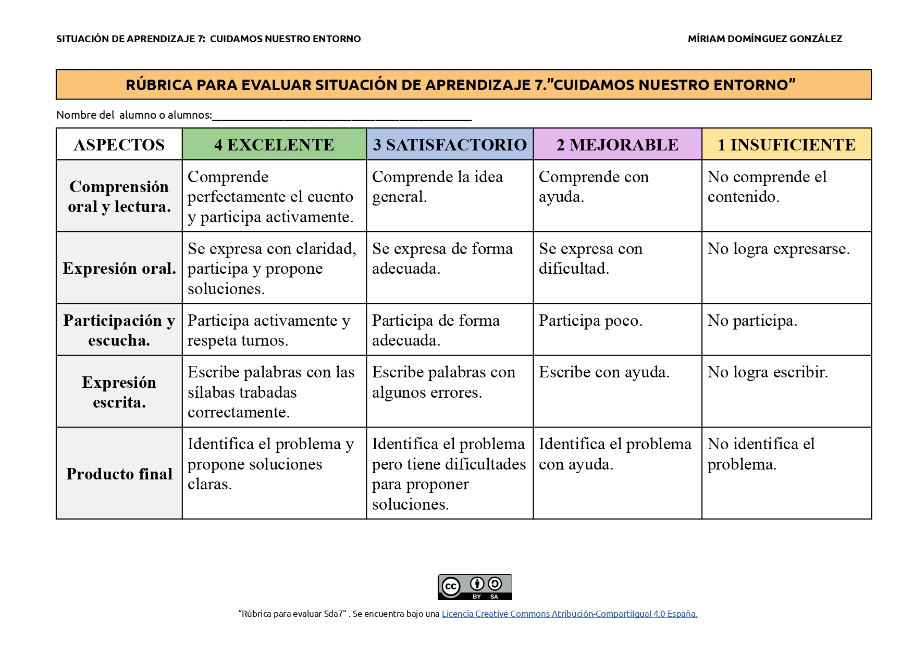

Texto
Para la Situación de Aprendizaje “ Cuidamos nuestro entorno”, la cual va dirigida a mi alumnado de 1º de Educación Primaria, usaré diferentes instrumentos de evaluación con el objetivo de recoger información sobre el proceso de aprendizaje y ofrecer una retroalimentación adecuada.
Por un lado, utilizaré una lista de cotejo durante el desarrollo de las actividades en el aula.
Con este instrumento evaluaré lo siguiente:
-La participación de mi alumnado.
-La identificación de problemas en el entorno.
-La realización de las tareas propuestas y el uso de herramientas digitales .
La recogida de información la realizaré mediante la observación directa. Esto me permitirá detectar dificultades en el momento y adaptar la enseñanza según las necesidades de mi alumnado. Los datos obtenidos me servirán para hacer un seguimiento individualizado, así como para introducir mejoras en mi práctica docente.
Por otro lado, usaré una rúbrica para evaluar tanto el proceso en la situación como el producto final del proyecto. Con ella evaluaré aspectos como:
-La comprensión oral y la lectura.
-La expresión oral.
-La participación en diálogos y actividades.
-El inicio a la escritura.
-La realización del producto final (fotografía y vídeo).
La rúbrica me permitirá evaluar de forma más detallada el nivel de logro de mi alumnado, facilitando una retroalimentación clara y comprensible, siendo unos de los instrumentos que siempre uso por excelencia.
Los datos obtenidos a través de estos instrumentos de evaluación me permitirá tener en cuenta distintos aspectos muy importantes como son:
-Detectar dificultades en el aprendizaje.
-Adaptar las actividades al ritmo del alumnado.
-Ofrecer apoyo individualizado.
-Mejorar la práctica docente.
Además, tengo en cuenta que mi alumnado de 1.o de Primaria requiere acompañamiento familiar, por lo que valoraré especialmente el proceso y el esfuerzo realizado.
Durante el proceso pueden surgir algunas dificultades, como:
-Diferentes ritmos de aprendizaje.
-Necesidad de ayuda familiar.
-Dificultades en el uso de herramientas digitales.
Para ello, adoptaré una actitud flexible, adaptando las actividades y ofreciendo apoyo tanto al alumnado como a las familias.
Texto
